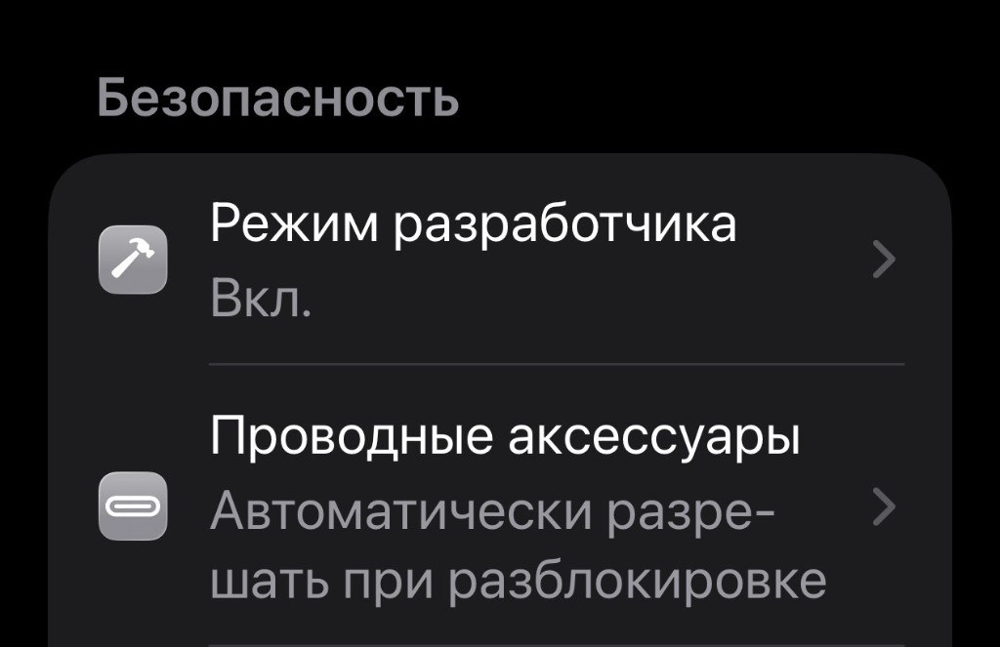
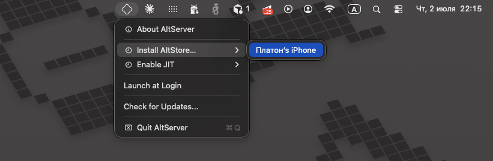
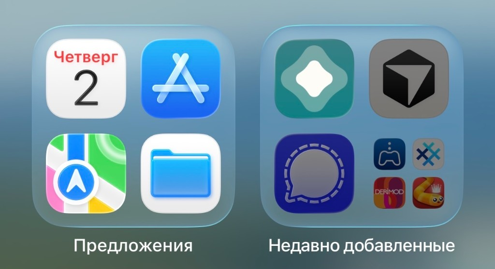
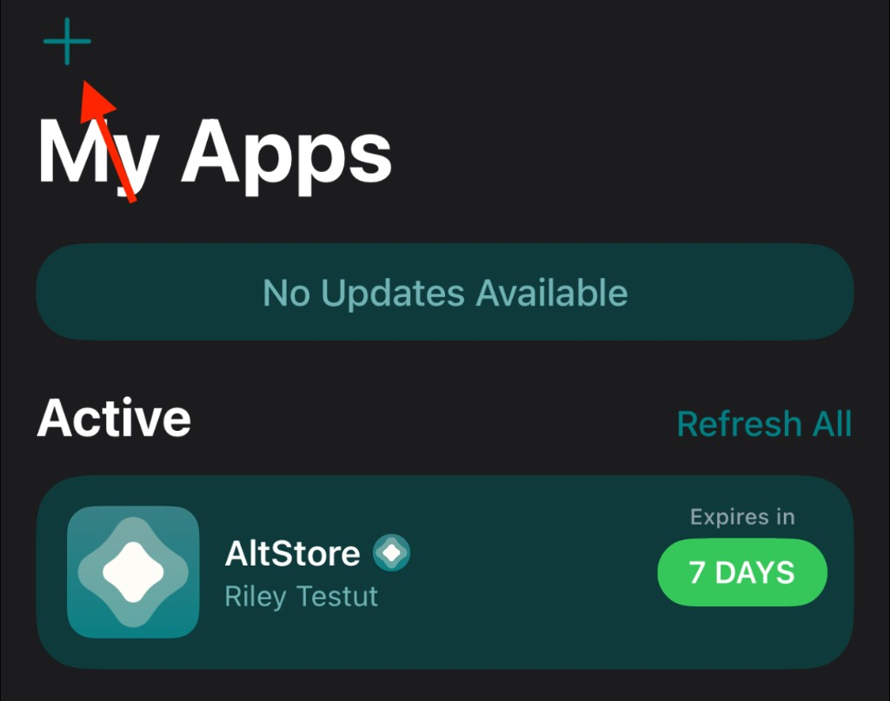

00
Enable Developer Mode on iPhone
Open Settings → Privacy & Security → Developer Mode (on Russian iPhones: Настройки → Конфиденциальность и безопасность → Режим разработчика) and turn it on. iPhone will ask to restart — confirm.

Not on the App Store in your region? Sideload Chat2Chat from your Mac. Follow the six steps below in order.
You'll need a Mac, a Lightning/USB-C cable, and your Apple ID. The app re-signs every 7 days while AltServer is running on the same Wi‑Fi.
Open Settings → Privacy & Security → Developer Mode (on Russian iPhones: Настройки → Конфиденциальность и безопасность → Режим разработчика) and turn it on. iPhone will ask to restart — confirm.

Go to altstore.io, download AltServer for macOS and drag it into Applications. Launch it — the icon appears in the menu bar.
Plug iPhone into the Mac. Tap Trust This Computer on the phone. In the menu bar: AltServer → Install AltStore → pick your device.


Enter your Apple ID when prompted — it's needed to sign apps. AltStore lands on your home screen within about a minute.
Download the installer to your iPhone (Safari) or Mac (AirDrop to phone). Save it to Files or open from the share sheet.
Download Chat2Chat.ipa Or add AltStore source
In AltStore go to My Apps → tap + (top left) → select Chat2Chat-latest.ipa. Or tap the IPA in Files → Share → Open in AltStore.
App won't open? Settings → General → VPN & Device Management → trust your Apple ID. Refresh Chat2Chat in AltStore every 7 days (Mac + AltServer on the same Wi‑Fi).